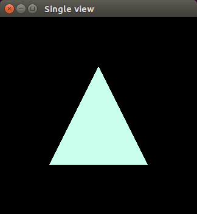
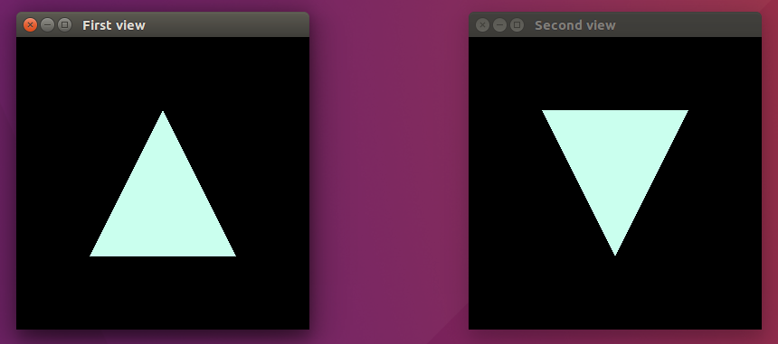

Problem: use separate GLUT windows with own callbacks and drawing functions.
Example: written on C++, freeglut.
Languages:
EN,
RU
Table of contents
• Single classic window
• Two classic windows
• Single window as class object
• Abstract views manager
• GLUT subwindows
• Useful links
Single classic window
GLUT is a library for OpenGL.
It provides windows manipulations: create, reshape, receive user's callbacks and
display OpenGL's drawings stored in buffers.
Minimal usage includes GLUT and window initialization, settings references to
callback functions by specific events.
#include <GL/freeglut.h>
int main(int argc, char** argv) {
glutInit(&argc, argv); // GLUT initialization.
// Window initialization.
glutInitWindowSize(324, 324); // Width, height of window.
glutInitWindowPosition(0, 0); // (x, y) position of window from top-left.
int window_id = glutCreateWindow("Single view");
glutDisplayFunc(display); // Set callback.
glutMainLoop(); // Start GLUT's internal loop. Exit by window closing.
return 0;
}
|
void display() {
glClear(GL_COLOR_BUFFER_BIT);
glColor3ub(0xCA, 0xFF, 0xEE); // Hex just for fun. Color is (202, 255, 238).
glBegin(GL_TRIANGLES);
glVertex2f(0.0f, 0.5f);
glVertex2f(-0.5f, -0.5f);
glVertex2f(0.5f, -0.5f);
glEnd();
glutSwapBuffers();
}
|
Created window inherits OS's windows style.
At pictures it is running on Ubuntu 16.04LTS.

Addition: GLUT is a powerful but simple windows manager. We can not make some
OS-like operations like hiding window's header or keep window always on top of
other windows.
Two classic windows
We initializing two windows sequently. For each write own display function.
int main(int argc, char** argv) {
glutInit(&argc, argv); // GLUT initialization.
// First window initialization.
glutInitWindowSize(324, 324); // Width, height of window.
glutInitWindowPosition(0, 0); // (x, y) position of window from top-left.
int first_window_id = glutCreateWindow("First view");
glutDisplayFunc(display_first);
// Second window initialization.
glutInitWindowSize(324, 324);
glutInitWindowPosition(500, 0);
int second_window_id = glutCreateWindow("Second view");
glutDisplayFunc(display_second);
// Start GLUT's internal loop. Exit by one of windows is closing.
glutMainLoop();
return 0;
}
|
void display_first() {
glClear(GL_COLOR_BUFFER_BIT);
glColor3ub(0xCA, 0xFF, 0xEE);
glBegin(GL_TRIANGLES);
glVertex2f(0.0f, 0.5f);
glVertex2f(-0.5f, -0.5f);
glVertex2f(0.5f, -0.5f);
glEnd();
glutSwapBuffers();
}
void display_second() {
glClear(GL_COLOR_BUFFER_BIT);
glColor3ub(0xCA, 0xFF, 0xEE);
glBegin(GL_TRIANGLES);
glVertex2f(0.0f, -0.5f);
glVertex2f(0.5f, 0.5f);
glVertex2f(-0.5f, 0.5f);
glEnd();
glutSwapBuffers();
}
|

Single window as class object
Generally, problem is solved. But in future we may want to have more than two
windows and with more harder callbacks logic. Let's try encapsulate window
managment inside class for more scalability.
Make step backward to single window problem and implement class with same usage.
class GLView {
public:
GLView(const char* title);
private:
static void display();
};
Header of our class has all that we need. User choose window title only.
Now main function use single line for create similar window. In sight of class
user it is easy to use without care about internal implementation.
int main(int argc, char** argv) {
GLView glview("Single view");
glutMainLoop();
return 0;
}
In sight of class we just encpsulated existing usage inside corresponding
methods. Note that functions is static. It is required for registering
callbacks.
GLView::GLView(const char* title) {
// GLUT initialization.
int argc = 0;
glutInit(&argc, 0);
// Window initialization.
glutInitWindowSize(324, 324); // Width, height of window.
glutInitWindowPosition(0, 0); // (x, y) position of window from top-left.
int window_id = glutCreateWindow(title);
glutDisplayFunc(display); // Set callback.
}
|
void GLView::display() {
glClear(GL_COLOR_BUFFER_BIT);
glColor3ub(0xCA, 0xFF, 0xEE);
glBegin(GL_TRIANGLES);
glVertex2f(0.0f, 0.5f);
glVertex2f(-0.5f, -0.5f);
glVertex2f(0.5f, -0.5f);
glEnd();
glutSwapBuffers();
}
|
Abstract views manager
We need to provide few windows management. Due to display function is static, it
is same for different class objects. But we need to separate displaying.
Let's make display as abstract function that will be implemented inside
an inherited classes. As callback we calling each display of created window.
class GLView {
public:
GLView(const char* title);
protected:
virtual void display() = 0;
private:
static void display_all();
static std::vector<GLView*> glviews;
int window_id;
};
We will see that display_all function is registered as callback for each window
i.e. in case of single display request we redisplay every other window.
GLView::GLView(const char* title) {
if (glviews.empty()) {
int argc = 0;
glutInit(&argc, 0); // GLUT initialization.
}
// Window initialization.
glutInitWindowSize(324, 324); // Width, height of window.
glutInitWindowPosition(0, 0); // (x, y) position of window from top-left.
window_id = glutCreateWindow(title);
glviews.push_back(this);
glutDisplayFunc(display_all); // Set callback.
}
|
void GLView::display_all() {
for (int i = 0; i < glviews.size(); ++i) {
glviews[i]->display();
}
}
|
Before we had different functions for different windows. Now we have problem
with window identification. If unroll a loop inside display_all method, only
last iteration is actual because it has own glClear(..) and glutSwapBuffers(..)
calls that overwrites previous changes.
For solving problem we using glutSetWindow(..). It sets current window for
which applying future commands.
void GLView::display_all() {
for (int i = 0; i < glviews.size(); ++i) {
glutSetWindow(glviews[i]->window_id);
glviews[i]->display();
}
}
For new window we implements class with own display.
class FirstView : public GLView {
public:
FirstView() : GLView("First view") {}
protected:
virtual void display() {
glClear(GL_COLOR_BUFFER_BIT);
glColor3ub(0xCA, 0xFF, 0xEE);
glBegin(GL_TRIANGLES);
glVertex2f(0.0f, 0.5f);
glVertex2f(-0.5f, -0.5f);
glVertex2f(0.5f, -0.5f);
glEnd();
glutSwapBuffers();
}
};
|
class SecondView : public GLView {
public:
SecondView() : GLView("Second view") {}
protected:
virtual void display() {
glClear(GL_COLOR_BUFFER_BIT);
glColor3ub(0xCA, 0xFF, 0xEE);
glBegin(GL_TRIANGLES);
glVertex2f(0.0f, -0.5f);
glVertex2f(0.5f, 0.5f);
glVertex2f(-0.5f, 0.5f);
glEnd();
glutSwapBuffers();
}
};
|
GLUT subwindows
In addition let's try merge two windows inside single window. But each subwindow
has own callbacks.
GLUT has method glutCreateSubWindow(..) which creates new window in space of
existing parent window.
GLView::GLView(const char* title, GLView* parent) {
if (glviews.empty()) {
int argc = 0;
glutInit(&argc, 0); // GLUT initialization.
}
// Window initialization.
if (parent != 0) {
// Receive parent's id, x, y, width and height. Subwindows has not titles.
window_id = glutCreateSubWindow(parent->window_id, 0, 0, 128, 128);
} else {
glutInitWindowSize(324, 324); // Width, height of window.
glutInitWindowPosition(0, 0); // (x, y) position of window from top-left.
window_id = glutCreateWindow(title);
}
glviews.push_back(this);
glutDisplayFunc(display_all); // Set callback.
}

Addition: subwindow has constant shape although parent size changes. If needed,
we can make own child reshape using relative coordinates and parent's reshape
callback.
Useful links
OpenGL 2.1 Reference Pages
freeglut API